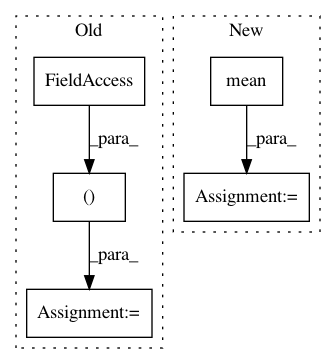

f37d0f2da815d3674dbba5ef1d8711357348c94f,implementations/wgan/wgan.py,,,#,88
Before Change
optimizer_G.zero_grad()
// Sample noise as generator input
z = Variable(Tensor(np.random.normal(0, 1, (imgs.shape[0], opt.latent_dim))))
// Generate a batch of images
gen_imgs = generator(z)
After Change
// Generate a batch of images
fake_imgs = generator(z)
// Adversarial loss
loss_D = -torch.mean(discriminator(real_imgs)) + torch.mean(discriminator(fake_imgs))
loss_D.backward()
optimizer_D.step()
In pattern: SUPERPATTERN
Frequency: 3
Non-data size: 5
Instances
Project Name: eriklindernoren/PyTorch-GAN
Commit Name: f37d0f2da815d3674dbba5ef1d8711357348c94f
Time: 2018-05-07
Author: eriklindernoren@live.se
File Name: implementations/wgan/wgan.py
Class Name:
Method Name:
Project Name: scikit-learn-contrib/DESlib
Commit Name: 85d5c30d2186d07857d1f0fb7c269eb08d2b7d79
Time: 2018-04-07
Author: rafaelmenelau@gmail.com
File Name: deslib/des/des_clustering.py
Class Name: DESClustering
Method Name: fit
Project Name: alexandrebarachant/muse-lsl
Commit Name: 858862178de7e298be10dda06b5bdc3f8bb5dc12
Time: 2017-06-27
Author: morrisondano@gmail.com
File Name: lsl-viewer.py
Class Name: LSLViewer
Method Name: update_plot